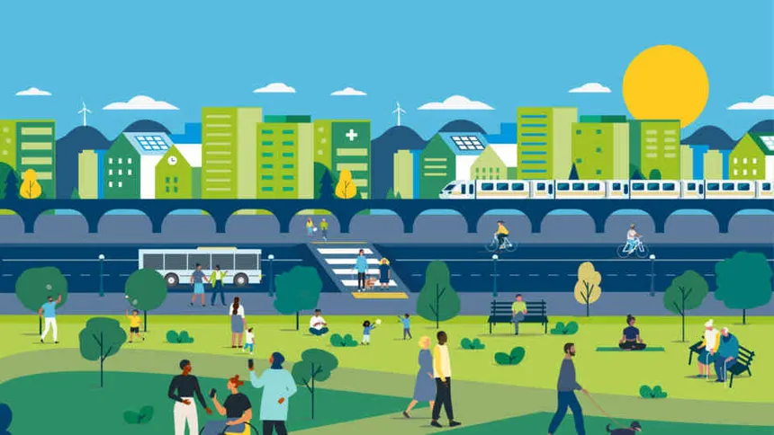

// projects
Lab work & documentation
Each project simulates a real enterprise environment. Click to explore the details, tools used, and lessons learned.

Active
Enterprise Infrastructure Lab
Simulated corporate IT environment — Active Directory, virtual servers, secure file services, backup systems, and infrastructure monitoring.
Windows Server
AD DS
Hyper-V

Active
Networking Lab
Hands-on VLAN setup, IP routing, and connectivity testing using real hardware and simulators. Includes enterprise network topology design.
GNS3
Packet Tracer
Wireshark

Completed
Web Development Project
This portfolio — responsive site built with HTML, CSS, and JavaScript. Focused on clean layout, animations, and user experience.
HTML
CSS
JavaScript
Q3 2026
Cloud Infrastructure Lab
Virtual networks, compute resources, storage, identity services, and secure cloud connectivity. Deploying and operating in a real cloud environment.
Azure
AWS
Terraform
In Progress
Cybersecurity Fundamentals
Firewall configuration, vulnerability scanning, threat detection, and system hardening. Built to simulate real defensive security operations.
pfSense
Nessus
Snort